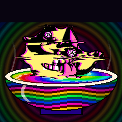

SynthSoup
Custom firmware for the M-VAVE FM-1. Morphing wavetables, the Commodore 64's SID chip, granular and tape delays, a reverb that climbs in octaves, and sampling on the device. Everything the Felucca firmware does, plus all of that, in a dark psychedelic coat.
Version 0.1 · untested on hardware
Listen
Rendered by the firmware's own audio code, the same code that runs in the player and on the FM-1.
- TABLE · PSYCHA wavetable of spiralling phases, scanned by an envelope
- TABLE · SUPRSAWA detuned saw stack from the wavetable engine
- DIMENSION · DIMENA pad cut into a cloud of grains
- DIMENSION · TAPEA worn tape: wow, flutter, hiss and dropouts
- DIMENSION · TAPETIME changed mid-phrase: the echoes bend with the tape's speed
- REVERB · SHIMMERA wavetable pad, its tail climbing in octaves
What's in the soup
Built on Felucca 1.5.1 by Leo Kuroshita, Hügelton Instruments. All of Felucca's engines, sequencer, effects and editor are still there.
TABLE wavetables
16 tables built from recipes on the device, 16 frames each, 10 warp modes, a sub, detune and a resonant filter. Envelopes and LFOs scan the table.
SID chip
The C64's MOS 6581 and 8580 from Melodee: combined waveforms sampled from real chips, the chip's own filter and envelopes, 32 presets.
DIMENSION
The delay in three modes: DELAY as before, DIMEN (a granular pocket dimension with octave shimmer and freeze) and TAPE (wow, flutter, drive, hiss and dropouts).
SHIMMER reverb
A fourth reverb type beside ROOM, SPRING and HALL: the hall's tail is pitched up an octave and fed back, so held notes bloom upwards.
RESAMPLE
Record what the FM-1 plays into one of three sample slots, then play it back with the SAMPLE, SLICE or GRAIN engine. Hold REC and tap C4, D4 or E4.
The soup cat
A power-on animation of the SynthSoup cat in a bowl of rainbow soup, and the SOUP colour palette across every screen.
Install
Nobody has run SynthSoup on an FM-1 yet. It passes the full Felucca test suite plus its own tests, and it was built with the FM-1's real toolchain, but there is no proven recovery from a failed install. Install it only if you accept that risk.
Keep M-VAVE's official V15 firmware file before you start: it is how you go back to stock.
- Back up your projects with the editor's full backup.
- Connect the FM-1 by USB and open the web installer in Chrome or Edge (it needs Web MIDI).
- Or download
synthsoup-0.1.fwscand runtools/fm1_install.pyfrom a terminal. - To go back: M-VAVE's updater with the official file.